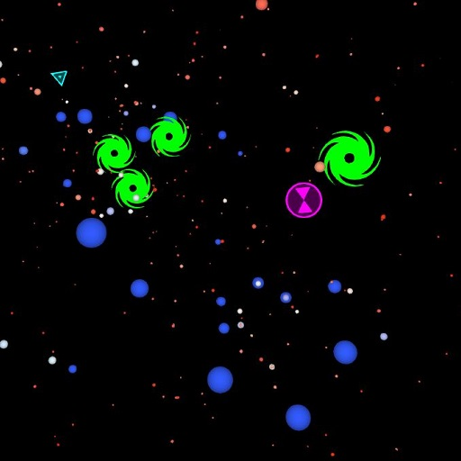

KBOs

The life of the Pleiades star cluster. The data for this visualization come from an N-body simulation, run by Aaron Geller on Northwestern Unversity's Quest supercomputer, using the NBODY6++GPU code (originally developed by Sverre Aarseth, with binary and stellar evolution updates from Jarrod Hurley, and parallelized by Rainer Spurzem and Long Wong, with additional modifications by Aaron Geller and Carl Rodriguez for defining initial conditions, output format, black hole and neutron star kicks, and high-mass star winds). The visualization shows both the positions of stars and their locations on an H-R diagram as functions of time for 100 Myr, and the user can toggle between these two modes. Stellar radii are exagerated for visual effect (but can be rescaled by the user as desired). Colors follow the effective surface temperatures. Black holes are shown with green spiral icons. Neutron stars are shown with magenta hourglass icons. White dwarfs are shown with cyan triangle icons. Stars that form blue stragglers can be circled in light slate blue (circled for entire lifetimes). Stars that form neutron stars through electron capture supernovae can be circled in orange (circled for entire lifetimes).
PleiadesEvo.prop
There are several variables to control the appearance and behaviour of this dataset. They are found in PleiadesEvo. Below defaults are shown in [brackets].
- dTime : the time step in Myr (if you increase this above the defaul, you can get trail from particles, though this is not it's intended use) [0.0325]
- showAll : >0 draw all stars; =0 do not draw normal stars; also used for the alpha value for the trails of normal stars [1.0]
- allRadfac : multiplicative factor for radii of particles when log scaled, and knee in scaling function for normal radii [20.0]
- maxRadius : maximum radius for all particles [0.7]
- minRadius : minimum radius for all particles [0.02]
- BHrad : black hole radius to draw [0.4]
- showBH : >0 draw black holes; =0 do not draw black holes [1.0]
- NSrad : neutron star radius to draw [0.4]
- showNS : >0 draw neutron stars; =0 do not draw neutron stars [1.0]
- WDrad : white dwarf radius to draw [0.4]
- showWD : >0 draw white dwarfs; =0 do not draw white dwarfs [1.0]
- SNerad : supernovae radius to draw [7.0]
- showSNe : >0 draw supernovae; =0 do not draw supernovae [1.0]
- showHRd : =1 show stars in HR diagram; =0 show particles at spatial positions; in between 0 and 1 mixes the two positions (this variable is used to transition from a spatial plot to the HR diagram) [0.0]
- dologRad : =1 use log_10(Radius) for the normal star radii; !=1 use Radius [0.0]
- showBSS : >0 circle stars that form blue stragglers (for entire lifetimes); =0 do not circle [0.0]
- BSSrad : radius of blue straggler circle to draw [0.8]
- showECS : >0 circle stars that form neutron stars by electron capture supernovae, aka ECS (for entire lifetimes); =0 do not circle [0.0]
- ECSrad : radius of ECS neutron star circle to draw [0.8]
- trailLength : trail Length (Myr), if negative do not draw [-1.0]
- mixz : >0 define alpha of trail by the distance from camera, farther is more transparent [0.0]
- Allalpha :define transparency of all objects [1.0]
- exagColors : >0 then use exagerated colors for stars, can choose values between 0 and 1 [1.0].
- zlength : z-offset for alpha in trail fade defined by distance from camera [1.3].
- zknee : mid-alpha ("half-life") z distance for alpha in trail fade defined by distance from camera [4.0].
The module will appear as "PleiadesEvo" in the object tree, under Adler.
Version
1.0
Created
24 August, 2016
Created By
Aaron Geller
Northwestern University / CIERA and Adler Planetarium, and also funded by a National Science Foundation Astronomy and Astrophysics Postdoctoral Fellowship under Award No. AST1302765
and
Mark SubbaRao
Adler Planetarium
CC-BY